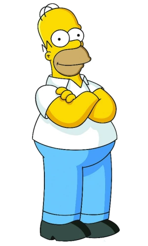
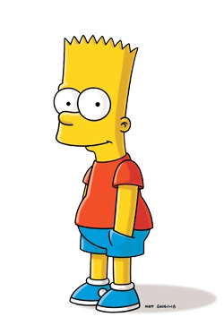
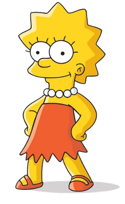

The Simpsons is a parody of the US middle-class lifestyle embodied in the Simpsons family,
which consists of Homer, Marge, Bart, Lisa and Maggie.
Most of the events take place in the fictional town of Springfield

Homer Jay Simpson (born May 12, 1956) is the main protagonist of The Simpsons series (or show). He is the spouse of Marge Simpson and father of Bart, Lisa and Maggie Simpson. Homer is overweight (said to be ~240 pounds), lazy, and often ignorant to the world around him. Although Homer has many flaws, he has shown to have great caring, love, and even bravery to those he cares about and, sometimes, even others he doesn't. He also serves as the main protagonist of the The Simpsons Movie.

Bartholomew "Bart" Jojo Simpson (born April 1 or February 23[8]) is the mischievous, rebellious, misunderstood, disruptive and "potentially dangerous" oldest child of the Simpson family in The Simpsons. He is the only son of Homer and Marge Simpson, and the older brother of Lisa and Maggie. He also has been nicknamed "Cosmo", after discovering a comet in "Bart's Comet". Bart has also been on the cover on numerous comics, such as "Critical Hit", "Simpsons Treasure Trove #11", and "Winter Wingding". Bart also has a 100-issue comic series entitled the Simpson Comics Presents Bart Simpson. Bart is loosely based on Matt Groening and his older brother, Mark Groening.

Lisa Marie Simpson (born May 9) is the elder daughter and middle child of the Simpson family and one of the two tritagonists (along with Marge,) of The Simpsons series.In "Homer and Lisa Exchange Cross Words" she is also known as Lisa Bouvier. She was named after a train called Lil' Lisa on her parents' 1st anniversary. She is a charismatic 8-year-old girl, who exceeds the standard achievement of the intelligence level of children her age.